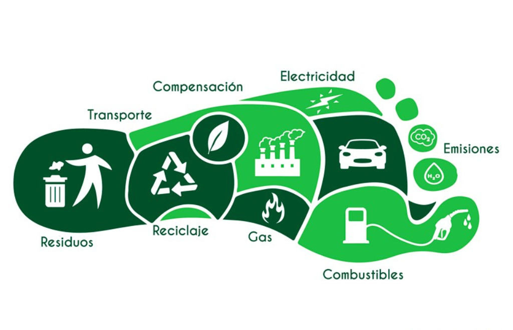

¿Qué es la Huella de Carbono?
La huella de carbono es una medida del impacto que tienen las actividades humanas sobre el medio ambiente en términos de emisiones de gases de efecto invernadero (GEI), expresadas en unidades de dióxido de carbono equivalente (CO2e).

¿Qué contribuye a la huella de carbono?
- Transporte: Uso de automóviles, aviones y otros vehículos que queman combustibles fósiles.
- Consumo de energía: Electricidad y calefacción generadas con carbón, petróleo o gas natural.
- Alimentación: Producción, transporte y desperdicio de alimentos, especialmente los de origen animal.
- Consumo de bienes: Fabricación y transporte de ropa, aparatos electrónicos y otros productos.
¿Por qué es importante reducirla?
Reducir nuestra huella de carbono ayuda a combatir el cambio climático, mejora la calidad del aire, protege los ecosistemas y contribuye a una vida más sostenible para las futuras generaciones.
¿Cómo podemos reducirla?
- Optar por medios de transporte sostenibles como caminar, usar bicicleta o transporte público.
- Ahorrar energía en el hogar con bombillas LED y electrodomésticos eficientes.
- Consumir productos locales y de temporada.
- Reducir el consumo de carne y lácteos.
- Evitar el desperdicio de alimentos y reciclar correctamente.
Pequeñas acciones diarias pueden tener un gran impacto si las adoptamos de forma colectiva.